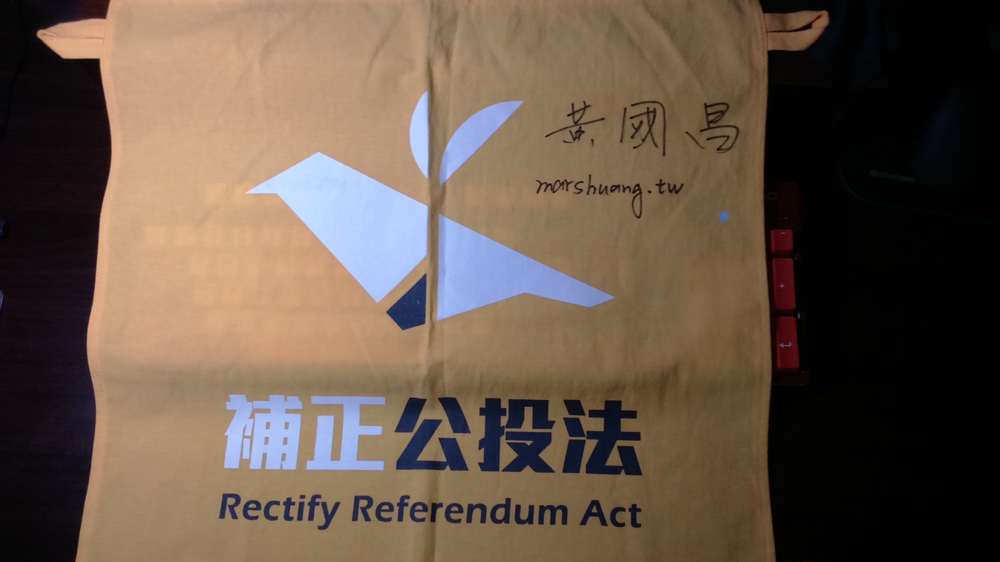

2016-04-11 〈更新二十二部影片〉
新增
20160411｜黃國昌｜財政委員會｜臺灣人被遣送到中國、臺灣省政府冗員、消防員進用不足
20160407｜黃國昌｜財政委員會｜稅務人員獎勵金、遠雄醫院承租國有地、海外避稅條款
20160407｜黃國昌｜司法及法制委員會｜農田水利會私人任用、汐止金龍湖維護
20160406｜黃國昌｜財政委員會｜質詢財政部長 反海外避稅條款
20160331｜黃國昌｜內政委員會｜隨機殺人事件處理及預防對策
20160330｜黃國昌｜財政委員會｜設置勞工董事 莫忘勞工心聲
20160328｜黃國昌｜財政委員會｜金管會報告TRF損失金額與處理方式
20160323｜黃國昌｜財政委員會｜保障身心障礙者之工作權，由記帳士法出發！
20160323｜黃國昌｜經濟委員會｜核燃料棒決定現地乾式儲存程序為何？
20160321｜黃國昌｜財政委員會｜審查「總預算第二預備金動支數額表」等14案
20160321｜黃國昌｜司法及法制委員會｜資策會技服中心人員移轉
20160317｜黃國昌｜財政委員會｜「保險法第一百零七條條文修正草案」
20160317｜黃國昌｜內政委員會｜審查行政院函請審議「集會遊行法修正草案」案
20160316｜黃國昌｜財政委員會質詢｜遺產稅去哪了？
20160316｜黃國昌｜內政委員會｜罷免宣傳遭裁罰
20160314｜黃國昌｜財政委員會｜統計數字不應粉飾太平 精確透明才具參考價值
20160314｜黃國昌｜內政委員會｜質詢不當黨產
20160310｜黃國昌｜財政委員會｜對中央銀行業務報告提出質詢
20160309｜黃國昌｜財政委員會｜質詢財政部長有關租稅改革
20160309｜黃國昌｜交通委員會｜近來媒體併購案及反媒體壟斷事項報告
20160307｜黃國昌｜財政委員會｜質詢金管會人民幣衍生性金融商品TRF&DKO
20160219｜黃國昌｜院會｜立院開議第一天總質詢
這兩天寫了一個專放質詢的網站marshuang.com
2016-01-25 〈更新二十三部影片〉
新增
20160123 新聞觀測站 黃國昌談話部分
20160122 NCC中嘉案公聽會 黃國昌部分
20160119 新台灣加油 黃國昌談話部分
20160118 新聞面對面 黃國昌談話部分
20160118 前進新台灣 黃國昌談話部分
20160116 新聞追追追大選特別報導 黃國昌談話部分
20160116 黃國昌宣布當選@汐止競選總部
20160115 Plenty at stake in Taiwan's presidential election
20160110 新北市第12選舉區公辦電視政見發表會 黃國昌部分
20160110 迎向新時代音樂會@金山夜市 黃國昌上台部分
20160109 時代力量造勢晚會@立法院旁濟南路 黃國昌＆李遠哲談話部分
20160109 迎向新時代音樂會@汐止原興廣場 黃國昌上台部分
20160104 新聞面對面 黃國昌相關部分
20160104 新聞挖挖哇 黃國昌相關部分
20160101 正晶限時批 黃國昌談話部分
20151229 新聞面對面 黃國昌談話部分
20151229 前進新台灣 黃國昌談話部分
20151227 走路工事件 Part II 記者會@黃國昌汐止競選總部 Part 1 記者會
20151227 走路工事件 Part II 記者會@黃國昌汐止競選總部 Part 2 Q&A
20151225 新台灣加油 黃國昌談話部分
20151223 新聞追追追 黃國昌談話部分
20151219 新北市美樂地音樂會 黃國昌上台部分
20151211 新聞追追追 黃國昌談話部分
2015-12-14 〈更新九部影片〉
新增
20151208 正晶限時批 黃國昌談話部分
20151207 新聞挖挖哇 黃國昌談話部分
20151204 正晶限時批 黃國昌談話部分
20151203 新聞面對面 黃國昌談話部分
20151130 前進新台灣 黃國昌談話部分
20151127 正晶限時批 黃國昌談話部分
20151126 新聞面對面 黃國昌談話部分
20151124 新台灣加油 黃國昌談話部分
20151119 前進新台灣 黃國昌談話部分
2015-11-10 〈更新十一部影片〉
以後的更新逐字稿都會放在"2015年11月以後更新"這個頁面
新增
20151105 有話好說 黃國昌談話部分
20151104 頭家來開講 黃國昌談話部分
20151104 前進新台灣 黃國昌談話部分
20151025 黃國昌瑞芳競選辦公室成立大會＿Part 9 黃國昌談話
20151022 正晶限時批 黃國昌談話部分
20151019 前進新台灣 黃國昌談話部分
20151019 有話好說 黃國昌老師談話部分
20151011 《民主與民粹》台灣新政治的展望 柯文哲 X 黃國昌
20151007 正晶限時批 黃國昌談話部分
20151005 新聞挖挖哇 黃國昌談話部分
20150923 正晶限時批 黃國昌談話部分
2015-09-20 〈更新十六部影片〉
"講座&演講 NEW!" 新增"20150909 夏日小影展《12怒漢：大審叛》 12 Angry Men 座談會＿黃國昌老師談話"
"講座&演講 NEW!" 新增"20150813 公督盟改革系列講座／外國國會制度看台灣國會改革座談會（黃國昌談話部分）"
"時代力量" 新增"20150913 時代力量第一屆主席團記者會@時代力量黨部"
"時代力量" 新增"20150906 黃國昌立委競選總部成立大會 黃國昌短講"
"時代力量" 新增"20150816 黃國昌競選夥伴召募會@新昌市民活動中心 Part 1 黃國昌說明如何贏回選舉"
"時代力量" 新增"20150816 黃國昌競選夥伴召募會@新昌市民活動中心 Part 2 小組討論結論＆黃國昌總結"
"時代力量" 新增"20150816 黃國昌競選夥伴召募會@新昌市民活動中心 Part 3 Ｑ＆Ａ時間"
"電視節目" 新增"20150918 [前進新台灣] 黃國昌談話部分"
"電視節目" 新增"20150907 [前進新台灣] 黃國昌談話部分"
"電視節目" 新增"20150730 [前進新台灣] 黃國昌老師談話部分 "
"電視節目" 新增"20150724 [前進新台灣] 黃國昌老師談話部分"
"電視節目" 新增"20150902 [新台灣加油] 黃國昌談話部分"
"電視節目" 新增"20150814 [新台灣加油] 黃國昌談話部分"
"電視節目" 新增"20150914 正晶限時批 黃國昌談話部分 "
"電視節目" 新增"20150810 正晶限時批 黃國昌談話部分"
"電視節目" 新增"20150915 [大家講看嘜] 洪版證所稅拼過關 為選舉 藍綠動員攻防!＿黃國昌談話部分"
2015-07-31 〈更新十九部影片、新增兩段語錄〉
"講座&演講 NEW!" 新增"20150726 時代力量中部暑期培訓營_Part 1 黃國昌：我對台灣未來的想像"
"講座&演講 NEW!" 新增"20150712 美西台灣人夏令會 黃國昌 還權與民+Q&A"
"講座&演講 NEW!" 新增"20150712 美國西部台灣人夏令會 黃國昌 台灣制憲+Q&A"
"講座&演講 NEW!" 新增"20150704 綠逗全國巡迴演講會高雄場＿如何讓國民黨國會不過半＿黃國昌老師部分"
"講座&演講 NEW!" 新增"20150627 綠逗聽友演講會台中場 如何讓國民黨國會不過半？ 黃國昌老師部分"
"講座&演講 NEW!" 新增"20150620 余杰《刀尖上的中國 》新書座談會@金石堂城中店（黃國昌部分）"
"講座&演講 NEW!" 新增"20150614 聯合國與人權保護：兼論台灣的實踐＿綜合座談（黃國昌部分）"
"講座&演講 NEW!" 新增"20150608「國會如何過半？如何壯大第三公民勢力？」演講：黃國昌"
"時代力量" 新增"20150727 黃國昌宣布參選新北市第12選區記者會@汐止長老教會 Part 1 記者會"
"時代力量" 新增"20150718 時代力量2015募款大會@台北典華大直旗艦館＿餐會黃國昌上台部分"
"時代力量" 新增"20150628 時代力量政策發表會 黃國昌接受媒體採訪"
"時代力量" 新增"20150613 邱顯智＆時代力量新竹聯合誓師掃街大會＿Part 3 黃國昌接受訪問"
"時代力量" 新增"20150606 臻愛空氣音樂會暨時代力量見面會@台中更樓_Part 3 宣誓口號"
"時代力量" 新增"20150531 時代力量記者會「面對美中，蔡英文應捍衛台灣主權」 黃國昌老師部分"
"電視節目" 新增"20150729 [新台灣加油] 黃國昌談話部分"
"電視節目" 新增"20150719 [新台灣加油] 黃國昌談話部分"
"電視節目" 新增"20150726 正晶限時批 黃國昌談話部分"
"廣播" 新增"20150730 綠逗來開講 陳惠敏 黃國昌 談黑箱課綱 林同學的離開 理想的政治"
"廣播" 新增"20150727 《寶島有意思》談參選理念 新北市立委參選人 黃國昌"
語錄新增以下兩段
Ⓞ戰神：
▲ 今天你要這些學生接受懲罰接受訓斥，我老實說這些學生目前為止展現出來的擔當都比你吳思華要來的有guts，這些學生他們做完這件事情以後，他們的第一個時間的態度不是說千萬不要處罰我們，他們願意面對，他們也勇於承擔接下來可能會有的法律程序，你作為一個真正大人的教育部部長，看到這樣的情況，你真的不會覺得汗顏嗎？今天需要被訓斥的，今天需要被再教育的不正是你的教育部部長嗎？你們前面的整個程序違法，到目前為止都還沒有提出一個讓人起碼可以接受的理由，你就不斷地在跳針抹黑這些學生，說是政黨在背後煽動，還說他們要被訓練成ISIS，這是什麼執政黨啊？
－黃國昌20150729@新台灣加油
－ － － － － － － － － － － － － － － － － － － － － － － － － － － － － － － － － － － － － － － － －
Ⓞ有趣的：
▲ 其實我自己對美國這個國家有滿複雜的感情，因為我自己之前來美國留學的時候，我就深刻體驗到一件事情，那當然那只是我自己個人的感受，並不代表各位在這邊的生活經驗，我那時候來美國念書的時候，我最深的感受就是美國是一個很現實的國家，他是一個很現實的國家，為什麼我會有這個感受，對不起，大家可以解散休息喝咖啡，聽我講一下以前年輕時候的事情。
我第一年來美國念書的時候，就全身上下穿得很隨便，就一條破牛仔褲，然後一條T-shirt，每天都待在圖書館，那個時候我念的Law School根本沒有半個人要鳥我，就當作我這個人不存在，那我想他們可能覺得我就是個foreigner，然後書也念不太好，就不理我，等到第一個學期的成績出來了以後，我到下學期什麼事情也不用做，坐在圖書館就變得很紅(全場笑)，就一堆美國Law School的學生來找我，要找我組讀書小組，然後要帶我出去玩，然後上完課的時候要跟我交換筆記，從那個時候我就知道，這是一個很現實的國家，當然我必須要承認我的經驗很片面，很多美國人還是充滿了愛心而有溫暖的。
－黃國昌20150712@美國
－ － － － － － － － － － － － － － － － － － － － － － － － － － － － － － － － － － － － － － － － －
2015-06-01 〈更新八部影片、新增三個頁面、新增兩段語錄、音樂更新、更新三篇文章〉
演講、其他各增加一個頁面、新增"時代力量"頁面；音樂：「島嶼天光」改成「當你孤單你會想起誰」
"講座&演講 NEW!" 新增"20150509 與媽媽聊公投法－補正公投法的理路與運動現況@台南瑪莎咖啡 黃國昌老師部分"
"時代力量" 新增"20150530 馮粉知己音樂晚會@淡水殼牌倉庫 黃國昌老師solo部分"
"時代力量" 新增"20150523 時代力量南勢角掃街 Part 2 黃國昌 受訪"
"時代力量" 新增"20150516 時代力量關鍵戰將萬華掃街 Part 5 路口短講（林昶佐 Freddy，馮光遠，黃國昌"
"時代力量" 新增"20150504 時代力量記者會 說明入黨與捐款方式 黃國昌發言"
"公聽會" 新增"20150427 公民投票制度公聽會@內政部 黃國昌老師及鍾芳樺老師部分"
"公聽會" 新增"20150427 公民投票制度公聽會@內政部 黃國昌老師會後受訪"
"其他 NEW!" 新增"20150514 「賴士葆永遠站在人民對立面」記者會 黃國昌發言"
"自由共和國" 新增"〈自由共和國〉黃國昌／馬英九執政七年：看不到黃金十年 只留下惡夢連連"
"自由共和國" 新增"〈自由共和國〉黃國昌／戳破執政黨的反智謬論"
"自由共和國" 新增"〈自由共和國〉黃國昌／召喚人民起義的是馬政府"
語錄新增以下兩段
Ⓞ論核心價值：
▲ 臺灣人民挺民進黨不是在挺民進黨，是在挺臺灣，要搞清楚這件事情，我們挺的是臺灣，你只是承載我們對於臺灣那個進步價值力量的一個載體，所以我們挺你這個政黨，臺灣人民挺你這個政黨不是無條件的，你幹什麼事情我都挺你，如果臺灣人民挺你挺到這樣盲目的程度的話，那只是在縱容你而已。
－黃國昌20150509@台南
－ － － － － － － － － － － － － － － － － － － － － － － － － － － － － － － － － － － － － － － － －
Ⓞ有趣的：
▲ 那當然那天我們論述先不講，先從運動的策略上面，那天我不是跑上去說張慶忠，那會議結束了以後，因為我們是在會議結束以後才去做那件事情，因為我不想要讓他有任何的藉口說我們去裡面鬧場，讓會議沒有辦法進行，那天我們一直等到下午的5點半多，主席宣布今天的會議結束了以後才上去找他講話，那其實各位如果有觀察我的話，會發現說我基本上是一個非常講道理，很溫和的人(全場笑)，可以笑小聲一點沒有關係，絕對不是我會做的事情嘛，我也可以老實跟大家講說那真的不是平常我會做的事情，但是我也沒有那麼容易受激怒啦，說情緒很憤怒，然後我就上去罵他，然後有人說他能夠感同身受，聽了那8個小時以後，要克制不去上他，要克制自己不要上去罵他這件事情的確是很困難。
－黃國昌20150509@台南
－ － － － － － － － － － － － － － － － － － － － － － － － － － － － － － － － － － － － － － － － －
2015-04-26 〈更新九部影片、新增一段語錄〉
"講座&演講 NEW！" 新增"20150418 「自己的憲法自己改」公民草根論壇@政大公企中心 黃國昌老師部分"
"廣播" 新增"20150413 為什麼要支持綠逗募款：黃國昌"
"廣播" 新增"20150410 莓莓新聞爆米香─專訪黃國昌"
"電視節目" 新增"20150409 正晶限時批（僅談到408公投法審查部分，黃國昌、吳國棟發言）"
"其他" 新增"20150416 總統出來講 黃國昌聲請傳喚馬英九為立院佔領案作證"
"其他" 新增"20150415 時代力量馮光遠立委選舉宣傳短講@淡水捷運站 黃國昌老師部分"
"其他" 新增"20150408 【沃草】 黃國昌怒嗆張慶忠擋公投法：「對得起人民嗎」"
"其他" 新增"20150408 立院審議「公民投票法」散會後門口記者會#黃國昌"
"其他" 新增"20150224 【蘋果Live】Freddy x 洪慈庸參選早餐會 黃國昌老師部分"
"推薦必看" 收錄"20150408 【沃草】 黃國昌怒嗆張慶忠擋公投法：「對得起人民嗎」"
語錄新增以下一段
Ⓞ戰神：
▲ 這個法案在內政委員會躺多久？整整躺兩年，到今天還在拖，你對得起人民嗎？你對得起人民嗎？你對得起人民嗎？張慶忠，你對得起人民嗎？我看不起你，我就是看不起你，你站在上面浪費納稅人的錢，台灣國會之恥就是你，台灣國會之恥！
你要好好講在哪裡講嘛，我跟你公開辯論啊，我有在怕你嗎？張委員不要逃跑啦，張委員不要逃跑啦，張委員不要逃跑。
我現在不能走出去嗎？我可不可以走出去？我到底侵犯到誰啊，你很奇怪耶，張委員不要跑！
－黃國昌20150408@立法院
－ － － － － － － － － － － － － － － － － － － － － － － － － － － － － － － － － － － － － － － － －
2015-04-01 〈更新八部影片〉
"講座&演講 NEW！" 新增"20150313 黃國昌老師演講 大學生能為社會做些什麼@長榮大學"
"廣播" 新增"20150326 [金寶電台] 學運之後：黃國昌 老師"
"電視節目" 新增"20150224 [新台灣加油] 黃國昌老師部分"
"其他" 新增"20150331「飛越鳥籠民主─黨產公投連署開跑」記者會"
"其他" 新增"20150315 410還權於民全國巡迴說明會 台中場 黃國昌老師部分"
"其他" 新增"20150310 島國前進遞交「補正公投法」連署書 記者會"
"其他" 新增"20150308 410還權於民全國巡迴說明會 台南場 黃國昌老師部分"
"其他" 新增20150307 410還權於民全國巡迴說明會 高雄場 黃國昌老師部分"
2015-02-17 〈更新九部影片、新增兩段語錄〉
"電視節目" 新增"20150214 [正晶限時批] 黃國昌老師部分"
"電視節目" 新增"20150213 [頭家來開講] 黃國昌老師部分"
"電視節目" 新增"20150211 [新聞面對面] 黃國昌老師部分"
"電視節目" 新增"20150210 [正晶限時批] 黃國昌老師部分"
"電視節目" 新增"20150209 [新聞挖挖哇] 黃國昌部分"
"島國前進" 新增"20150126 島國前進 師大小公園 飛帆請珍奶 黃國昌"
"島國前進" 新增"20150125 島國前進 湖光市場 黃國昌 民主情人節"
"其他" 新增"20150214 潘建志競選總部成立 黃國昌"
"其他" 新增"20150213 罷前之夜—勇敢與無感 黃國昌演講部分"
語錄新增以下兩段
Ⓞ戰神：
▲ 其實我今天滿高興聽到包括張委員以及另外一位來賓都同意說，罷免不能夠宣傳這是一件很荒謬的事情，那我也知道主持人非常地用心良苦，剛剛彭老師用了非常拗口的方式在講這件事情，但是我這個人比較直率，我喜歡直道而行，我今天來上這個節目最大的目的就是在幫0214罷免宣傳，那中選會的人也早就知道，因為我跟光遠哥我們當初在發動憲法133的運動的時候，早就很清楚地跟中選會講，罷免不能宣傳，《公職人員選舉罷免法》第86條第3項，這個在1984年戒嚴時代所立下的法律是明顯違憲的，中選會如果你不服氣，請你開罰，我們憲法法院見。
－黃國昌20150210@正晶限時批
－ － － － － － － － － － － － － － － － － － － － － － － － － － － － － － － － － － － － － － － － －
Ⓞ評江宜樺：
主持人：行政院說我的態度是寬容的，但是我不撤告，你對這個有什麼看法？
▲ 就是以這件事情來講，我必須要很直率地講，真的需要尋求人民寬容的是行政院，行政院要向人民尋求對他們寬容，他們有什麼資格跟立場表示他們寬容的立場？今天會發生整個太陽花的運動，江宜樺先生你要負什麼責任？323、324行政院血腥鎮壓的事件，江宜樺先生你要負什麼責任？你可以自己這樣子拍拍屁股準備跑到美國去，不用留下來臺灣面對你應該自己要承擔的法律責任跟接下來的司法審判程序嗎？
－黃國昌20150211@新聞面對面
－ － － － － － － － － － － － － － － － － － － － － － － － － － － － － － － － － － － － － － － － －
2015-02-10 〈更新六部影片、新增一篇文章、新增兩段語錄〉
"講座&演講 NEW！" 新增"20150206 桃園航空城的程序正義／補正公投法與憲改@桃園ThERE Cafe_黃國昌老師部分"
"講座&演講 NEW！" 新增"20150124 在高雄，你必須知道的公投一二三事系列講座－美濃農村發展定位"
"講座&演講 NEW！" 新增"20150108 黃國昌 台灣近期公民運動與憲政困境@中和高中"
"講座&演講 NEW！" 新增"20141228《九評共產黨》發行十週年系列座談會 黃國昌 (2國際人權及全球抗共風潮)"
"不要核四，五六運動" 新增"20150206【五六運動 - 公民論壇】 第100集 - 黃國昌"
"其他" 新增"20150122「410還權於民運動」-黃國昌"
"自由共和國" 新增一篇文章"〈自由共和國〉黃國昌／讓人民決定不分區立委"
語錄新增以下兩段
Ⓞ有趣的：
▲ 所以我那個時候在臉書專頁看到一個什麼「蔡正元委員我們永遠支持你」還是什麼的，我不曉得大家有沒有看到那個臉書專頁，我看那個臉書專頁的時候，我滿興奮的，我說，嘖，非常的好，所以我也去那個臉書專頁按讚(全場笑)，然後我也去幫那個臉書專頁promote，說這個就是真的民主，支持蔡正元的人你們一定要出來投。
－黃國昌20150124@高雄
－ － － － － － － － － － － － － － － － － － － － － － － － － － － － － － － － － － － － － － － － －
Ⓞ其他：
▲ 對於我而言，這句話還是很重要，而且當年紀越大的時候，覺得這句話越有道理，這事實上是兩句話，第一句話是：「知識就是力量」真的，知識就是力量，充實自己的知識；那第二句話是：「當你取得知識，取得力量的時候，記得，善用這個力量。」第二句話比第一句話還要重要，我們一起努力，謝謝。
－黃國昌20150108@中和高中
－ － － － － － － － － － － － － － － － － － － － － － － － － － － － － － － － － － － － － － － － －
2015-01-20 〈更新九部影片、新增一篇文章〉
"講座&演講 NEW！" 新增"20150110 學運人的政治志業@哲學『非』星期五@台中 黃國昌老師談話部分"
"講座&演講 NEW！" 新增"20150105 公民運動與民主革新 黃國昌老師演講@靜宜大學方濟樓惠三廳"
"講座&演講 NEW！" 新增"20141214 Why people should participate in judiciary？Huang Kuo-Chang (黃國昌) TEDxNCU"
"講座&演講 NEW！" 新增"20141211 電影《超越恐懼：高智晟的故事》座談會 與談人：黃國昌老師、朱婉琪律師"
"公聽會" 新增"20140310 「海峽兩岸服務貿易協議」第十六場公聽會 黃國昌老師發言"
"公聽會" 新增"20140113 「海峽兩岸服務貿易協議」第十五場公聽會 黃國昌老師發言"
"電視節目" 新增"20150101 [有話好說]：元旦釋善意！馬：所有不滿到我為止！"
"島國前進" 新增"20150118 黃國昌老師短講@島國前進×全面罷免蔡錦隆（街頭，採訪，晚會）"
"其他" 新增"20150111 蔡正元罷免總部成立記者會 黃國昌"
"自由共和國" 新增一篇文章"〈自由共和國〉黃國昌／朱主席 你支持還權於民嗎？"
兩部黃國昌老師主持的廣播節目沒有打，因為都不是以黃老師說話內容作為主體，邊際效益太低了，就不打了。
2014-12-25 〈更新七部影片、新增一篇文章、語錄新增十四段〉〈總字數突破150萬字！〉
經過這次更新，目前總字數1,528,837字，總影片時間120時21分，總影片數325部。
"講座&演講 NEW！" 新增"20141215 黃國昌老師演講 後318的台灣民主困境@清華大學基進筆記"
"講座&演講 NEW！" 新增"20141208 黃國昌老師演講 法律人的社會責任@高雄大學法律服務社"
"講座&演講 NEW！" 新增"20141207 黃國昌×林飛帆×周馥儀 閱讀，讓世界不一樣@龍顏講堂"
"講座&演講 NEW！" 新增"20141204 黃國昌老師演講 1129之後公民運動的展望@虎尾科大通識講座"
"講座&演講 NEW！" 新增"20141203 黃國昌老師in中女綠苑講座"
"講座&演講 NEW！" 新增"20141127 野火週演講：民主轉型的法律工程〈講者：黃國昌老師〉"
"其他" 新增"20141220 永社年會 場次四：台灣未來選舉制度的改革（蔡佳泓×賴中強×黃國昌）"
"推薦必看" 收錄 "20141208 黃國昌老師演講 法律人的社會責任@高雄大學法律服務社"
"推薦必看" 收錄 "20141203 黃國昌老師in中女綠苑講座"
"蘋果專欄" 新增一篇文章"黃國昌：憲改必須從人民角度出發"
語錄新增以下十四段
Ⓞ戰神：
▲ 你大概走在路上，你只要看到大的招牌的廠牌幾乎都是那個時候事務所的客戶。那對於那些客戶來講，他們其實很喜歡我，因為我那個時候在當律師的時候，我的出手非常的狠，就是我會讓對方當事人知道說，你如果不按照我的條件跟我和解，就不按照我的條件，不符合我的要求，實際在打官司的時候，我會讓你輸得更慘。因此我那個時候在辦的案件，10個案件裡面9件和解，就不需要去到法院，在法院以前就兵不血刃把事情處理完了。
－黃國昌20141208@高雄大學
－ － － － － － － － － － － － － － － － － － － － － － － － － － － － － － － － － － － － － － － － －
Ⓞ論核心價值：
▲ 那當然，就請各位不要誤會我是台獨基本教義派，算了啦，我就是台獨基本教義派(黃國昌笑)(全場笑+鼓掌)，你說人家是基本教義派，這個話其實很不禮貌，因為你好像在指控人家說，啊只要臺灣獨立，其他什麼都可以，當然不是這個樣子嘛，只有上面的問題，我們還希望現在的建構是什麼？現在的建構是說，在這個國家下面的這個憲政秩序生活對個人之所以會有意義是什麼，對個人之所以有意義從我的角度上面來講，並不是所謂民族主義的驕傲或是情感，而是我作為一個人的人性尊嚴跟基本權利，我可以在這個憲政秩序下面得到真正的保護。
－黃國昌20141215@清大
－ － － － － － － － － － － － － － － － － － － － － － － － － － － － － － － － － － － － － － － － －
▲ 當不正常的權力濫用因為人民的沉默而被看成了是一個正常的事情，這個國家的民主法治才真正要開始沉淪。
－黃國昌20141204@虎尾科大
－ － － － － － － － － － － － － － － － － － － － － － － － － － － － － － － － － － － － － － － － －
Ⓞ法律的意義：
▲ 這個禮拜五要再度以犯罪嫌疑人的身份去台北地方法院檢察署，當然就是三月的時候，318的事件，其實對我自己來講，就不是說害怕去坐牢那種層次的事情，那個不是真正關心的重點，真正關心的重點是，對於一個法律人來講，你有時候看到法律在前面劃一條紅線，因為你是法律人，所以那條紅線在哪裡，你心裡很清楚，你為了一定的目的被迫要踩過那個紅線，這件事情是，對我來講是，是滿掙扎，滿痛苦的事情。
▲ 對於一個法律人來講是，當我們今天在思考法律人在這個社會上面他存在的意義、他存在的價值，並不是我們比別人多吸收了一些專業知識，可以拿那個專業知識來販賣我們自己的勞務，當然我不是說這件事情完全沒有價值，但是我不覺得真正的意義跟價值在那個地方，真正的意義跟價值是你會不斷地對既有目前所形成的法律制度去反省、去思考，而且更重要的事情是說，希望藉由這套制度去生產出或者是去實踐出我們本來在訂定這套制度的時候，所希望達成的規範目的，那在這條道路上面，不斷地勇敢的去努力、去推進，我會覺得這才是法律人最可貴的地方。
－黃國昌20141208@高雄大學
－ － － － － － － － － － － － － － － － － － － － － － － － － － － － － － － － － － － － － － － － －
Ⓞ有趣的：
▲ 所以(黃國昌笑)，我其實跟你們講，你們知道1129的選舉我最關心哪一場選舉嗎？不是台北市也不是台中市，我最關心的選舉是新北市的市議員選舉，為什麼我會最關心新北市市議員選舉啊，有一個年輕人姓王(全場笑)，全名我就不要講，他很有趣啊，他非常有趣，因為我會開始注意到這個年輕人是我們在2012年反媒體壟斷的時候，他是唯一少數就是跳出來幫那個旺旺傳媒集團辯護的學生，他說這個有什麼錯，怎麼會有什麼媒體壟斷的問題，從2012年我就開始注意到這個人，那當然他聲名大噪不是在那個時候，因為那時候反媒體壟斷運動他在立法院擺下擂台，說要跟那個反媒體壟斷青年聯盟，跟青盟的辯論的時候，青盟根本沒有人鳥他，就他們就兩三個人在立法院門口開記者會。
－黃國昌20141215@清大
－ － － － － － － － － － － － － － － － － － － － － － － － － － － － － － － － － － － － － － － － －
▲ 我18歲剛考上法律系的時候，我做了一件很蠢的事情，就從我今天的角度來看，我做了很蠢的事情，你們現在應該很少拿那種很厚的六法全書，紅色的皮的那個超大本三民書局出的六法全書，現在還有人在用那個嗎？我考到法律系的第一件事情就是先去買一本那個超級大本的六法全書，我大一那一年大部分的時間，我每天都帶著那超大本的六法全書，帶在身上走，那從外人的眼光來看，會覺得說，欸，你是不是在跟人家炫耀你在念法律？其實不是，我那時候想法真的很好笑，那時候每天帶著那本六法全書是告訴我自己說：我想要每天都感受法律的重量(全場笑)，因為那本書真的很重，你去哪裡帶著那本書，就感覺到非常的重。
▲ 那晚上在補習班的工作其實很累人，但是在那個過程當中，我感覺到非常的快樂，其實很累，下了課我都覺得很快樂，當然我不知道學生快樂或不快樂，我希望他們也快樂，那但是從我每次補習班的課結束以後收到的卡片，對啊，現在很奇怪，現在我是在大學教得不好嗎？我在補習班課程結束以後收的卡片比我在大學收的卡片多太多了，那從他們給我的卡片，我知道他們也很enjoy，雖然是在補習班的授課。
－黃國昌20141208@高雄大學
－ － － － － － － － － － － － － － － － － － － － － － － － － － － － － － － － － － － － － － － － －
▲ 我那時候要填分組的時候，我填了第一類組，那時候包括學校的老師跟我家人全部都嚇壞了，他們說你怎麼會做這樣子的決定？
那當然我說學校的老師嚇壞了是因為，我從高一開始，我的物理就很強，真的很強(全場笑)，
真的真的，我具體的例子說明，不要自吹自擂，我高一那年參加物理科的科展，在學校先打敗高二高三，拿到全校第一，再參加台北市的，擊敗所有全台北市的對手，再拿到第一，再參加全國的，擊敗所有的對手，我只拿到第二名(全場笑)，從缺，那年的高中科展全國科展物理科第一名從缺，我也不知道，你要去問那個評審教授，那個評審教授，那個時候去參加科展的時候，其實我已經下定決心了，所以最後在決選階段的interview的時候，是某兩三個台大物理系的教授問我說：你以後要幹嘛？跟他們說我以後要念法律(全場笑)，然後結果那兩三個物理系的教授的那個表情實在，我當場看到他那表情就很奇怪，他說你以後要念法律？我說對，我以後要念法律，那你來參加這個幹嘛？我參加那個是我的興趣。
▲ 所以那個時候我每天早上，高三那一年，每天早上四點鐘，在建國中學的體育館，因為我那時候住在體育館裡面，我偷偷地住在裡面(全場笑)，那個是另外一個很長的故事，就是我偷偷地住在體育館裡面，我每天早上清晨四點鐘，因為高中的那個體育館很大，然後上面有一個講台，講台後面一定會放一個人的照片，那個人的照片就是孫文，我每天早上起來四點，打開上面的燈，坐在孫文前面，背他寫的三民主義，真的，我高三那年每天早上四點鐘起來背，然後背到六點半，這個是我那個時候準備大學聯考的方式。
▲ 那另外一方面是在政黨政治的發展上面，或許應該要期待新的力量出來，有新的選擇，就是讓大家有更好的選擇，就像你在市場上一樣，在市場上一樣，就像我那個前一陣子就很痛苦，前一陣子很痛苦是說，因為晚上回家常常喜歡吃泡麵，然後我後來發現我吃的那個統一蔥燒牛肉麵中標了以後(全場笑)，我其實心裡的打擊非常的大，因為那個麵我吃了十幾年，真的，真的真的，結果我後來就換了維力炸醬麵(全場笑)，結果過了兩個禮拜以後，發現又中標。
－黃國昌20141203@台中女中
－ － － － － － － － － － － － － － － － － － － － － － － － － － － － － － － － － － － － － － － － －
▲ 第一個階段是公民投票違憲論，就公民投票是違憲的，那各位有看過憲法條文的都會想說：啊，不對啊，憲法第17條不是說人民有選舉、罷免、創制、複決的權利？為何公民投票會違憲？對不起，那個論述的技巧太過花俏，導致我這個不是很好的腦袋也不是能夠充分的理解(全場笑)，這些論文都有，你們都可以去找，有台大政治系的教授寫的(全場笑)...(沉默幾秒)(黃國昌笑)，沒有啦，因為今天來這邊我就不好意思舉第二個例子(全場笑)，你們自己去找啦，論文只要寫出來了就放在那邊，永遠沒有辦法被抹煞，你們自己去找。
－黃國昌20141127@政大
－ － － － － － － － － － － － － － － － － － － － － － － － － － － － － － － － － － － － － － － － －
Ⓞ其他：
▲ 我的意思是說，你是主強臺灣獨立，對啊，我就主張臺灣獨立，這個有什麼好說的，現在整個臺灣主體意識越來越強烈，支持的人就越來越多嘛，那重點是什麼，重點是我們知道客觀上面的限制是什麼，積極的準備好自己，到時間到的時候，可以把這件事情做成，而不是，沒有一個國家的執政黨是用外力的威脅在恐嚇自己的人民，像中華人民共和國的人會笑我們說，你們臺灣有多民主，有哪一個民主國家的政府是拿外力的威脅在恐嚇自己國家的國民？啊也只有你們而已。
－黃國昌20141215@清大
－ － － － － － － － － － － － － － － － － － － － － － － － － － － － － － － － － － － － － － － － －
▲ 有的時候，你如果沒有那個決心去追求不可能的事情，常常有可能的事情都不會發生也做不到。
－黃國昌20141203@台中女中
－ － － － － － － － － － － － － － － － － － － － － － － － － － － － － － － － － － － － － － － － －
今天看FB的其他訊息，才赫然發現在網站發布那天(8/19)，黃國昌老師竟然有私訊謝謝我，感動到無以復加...
2014-12-07 〈更新十三部影片、新增一篇文章、語錄新增六段〉
感謝小布提供favicon原始圖連結
{kind=link}
"講座&演講 NEW！" 新增"20141202 名人論壇-黃國昌與林佳範談公民力量@師大學生會"
"講座&演講 NEW！" 新增"20141128 黃國昌老師演講 公民運動與民主改革@成大TGIF讀書會"
"講座&演講 NEW！" 新增"20141125 黃國昌老師演講 民主轉型的法律工程－談公投法補正及憲政改革@東吳大學城中跳馬"
"電視節目" 新增"20141202 [新台灣加油] 黃國昌老師部分"
"電視節目" 新增"20141128 [新台灣加油] 三立新聞台 黃國昌老師講話部分"
"電視節目" 新增"20141201 [有話好說]：國民黨大崩壞！2014選舉意義？ 黃國昌老師發言部分"
"電視節目" 新增"20141130 [正晶限時批] 黃國昌老師部分"
"島國前進" 新增"20141124 島國前進@三重天台廣場 黃國昌老師短講"
"島國前進" 新增"20141123 島國前進@淡水捷運站附近 黃國昌老師短講"
"其他" 新增"20141130 2014九合一選舉選後觀察座談會 黃國昌部分"
"其他" 新增"20141127 割闌尾記者會-黃國昌震怒"
"其他" 新增"20141127 黃國昌專訪(籲年輕人返鄉投票)"
"其他" 新增"20141127 黃國昌專訪(地方派系壟斷問題)"
"推薦必看" 收錄 "20141127 割闌尾記者會-黃國昌震怒"
"自由共和國" 新增一篇文章"〈自由共和國〉黃國昌／讓政客學會對人民謙卑"
語錄新增以下六段
Ⓞ戰神：
▲ 請問我今天把後面這6格全部壓縮成只有細細的一行，把第一格再放大，那這樣算不算是符合中選會的格式？如果不算是符合中選會的格式的話，請中選會的主委劉義周教授站出來，請你站出來告訴大家，你作為中選會主委的職責到底是在打壓人民行使憲法的權利，還是在貫徹你中選會組織法你應該要負有的職責？
今天這件事情發生在這個時間點，是我感覺到最最最可惡的部分，什麼叫最最最可惡的部分？他們讓這些公民，這些人，我拜託中選會的官員，你們自己上街去簽一次連署書，你就知道這件事情有多難做，他們犧牲自己的時間，在外面曬太陽淋雨，挨家挨戶去徵求這樣子的連署書，你還要這樣子去為難他們，你今天這樣子的做法是，到底他們可以用這個簽，還是可以用這個簽？之前新北市准許了以後，用這個簽的算不算數？如果不算數的話，那你代表的是說，只要不按照你用這個離譜的格式簽，而是用這個一模一樣的格式簽的人民他所行使的憲法罷免權通通都不算數嗎？你在開什麼玩笑啊？你在開什麼玩笑？
如果說他們今天用這張連署書去簽的話，中選會不斷地在媒體上面放消息，說只能按照這個簽，不能按照這個簽，他們拿這個格式去找一般的民眾簽的時候，一般的民眾難免會有疑慮，說我用這個簽真的會有用嗎？我用這個簽真的會有用嗎？我可以跟各位講的是說，如果用這個簽沒有用的話，我們準備打官司，我們準備打官司，聲請大法官會議解釋。
－黃國昌20141127@割闌尾記者會
－ － － － － － － － － － － － － － － － － － － － － － － － － － － － － － － － － － － － － － － － －
▲ 沒有對不起，沒有因為最近有點煩哪，所謂有點煩是那個監察院又來中研院鬧，還再繼續調查，本來已經停止了，後來呂學樟去質詢監察院的祕書長以後又重新開始，不過那個沒有關係啦，他們要來就來，也沒在怕他們。
－黃國昌20141125@東吳
－ － － － － － － － － － － － － － － － － － － － － － － － － － － － － － － － － － － － － － － － －
Ⓞ評蔡正元：
▲ 這所有的一切真的讓大家憤怒了，1129的這個行動，在一天的時間當中，克服了全世界，全世界最困難的罷免提議門檻，30天必須要收集原選舉區13%的人，去填中選會所規定那麼繁複不合理的表格，一天之內做到了，沒有任何政黨的奧援，沒有任何財團或地方派系的組織，這一些自主的公民清楚地喊出來了，只要我們自己覺醒，自己開始行動，改變是有可能發生的，我覺得這個是蔡正元先生到目前為止我所看到，他對於臺灣民主政治最有貢獻的地方。
事實上事情已經發展到這個程度，我會覺得蔡先生如果作為一個政治人物還有任何的風骨或擔當的話，事實上也不用再割下去了，可以慎重的考慮自己宣布辭職了，因為從這次割闌尾的行動，你只要到內湖南港區去看，那些民眾反應之熱烈，他們在投完票願意頂著大太陽在那邊排隊等，去寫那個罷免的連署書，你所看到所展現出來的能量以及包括最後柯文哲在那邊投票開票出來的結果，蔡正元先生你在你那個選區的選民當中是怎麼樣去定位評價你，我相信已經非常非常清楚。
－黃國昌20141130@正晶限時批
－ － － － － － － － － － － － － － － － － － － － － － － － － － － － － － － － － － － － － － － － －
Ⓞ論核心價值：
▲ 第一個答案是說，不關我的事，關我什麼事；那第二個答案是說，那些人吃飽太閒，被打活該；第三個答案是，國家的權力如何能夠被這樣濫用，人民受到憲法所保障集會遊行的權利如何能這樣被踐踏，我們一定要站出來。
一個社會成熟的程度真的完全取決於這個社會裡面的公民在這三個選項當中比重的分配。
－黃國昌20141202@師大
－ － － － － － － － － － － － － － － － － － － － － － － － － － － － － － － － － － － － － － － － －
Ⓞ負責：
▲ 那個時候針對國家集團性的暴力行為，我們跑去監察院，要監察委員處理，我們的監察院沒有任何一個人為這個事情負責，沒有任何一個人喔，我講的是從上到下，不管是上面的發令系統，還是下面的執行系統，沒有任何一個人為這件事情負起任何責任，不要說法律責任，政治責任、行政責任通通都沒有。當我們以為我們爭取到了民主自由，當我們以為我們已經是可以自豪臺灣是一個捍衛人權國家的時候，發生了這麼大規模國家集團性的暴力行為，最後的結果是什麼？沒有任何的人負責，監察院不痛不癢地過了一個糾正案。
－黃國昌20141128@成大
－ － － － － － － － － － － － － － － － － － － － － － － － － － － － － － － － － － － － － － － － －
Ⓞ有趣的：
▲ 不好意思，其實我準備了很多投影片，不是只有一張(全場笑)混兩個小時，沒有沒有，但是我們現實上面一定講不完。
－黃國昌20141125@東吳
－ － － － － － － － － － － － － － － － － － － － － － － － － － － － － － － － － － － － － － － － －
2014-11-23 〈更新八部影片、文章部分新增"其他"分頁、文章新增三篇〉
恭喜老師升等為研究員！
慶祝老師升等，一次更新20幾萬字！其實只是最近考試有點多加上出了一點點小狀況，更新慢了一點，不好意思，下面兩個面板也是這次更新的！
"講座&演講 NEW！" 新增"20141118 黃國昌老師演講 公投法修正講座@台大濁水溪社"
"講座&演講 NEW！" 新增"20141105 黃國昌老師演講 為權力而奮鬥─從學生運動到現代公民@成大 p1"
"講座&演講 NEW！" 新增"20141105 黃國昌老師演講 為權力而奮鬥─從學生運動到現代公民@成大 p2"
"講座&演講 NEW！" 新增"20141005 為什麼我要離開沙發走上街頭：黃國昌(Kuo-Chang Huang) at TEDxTaipei 2014"
"島國前進" 新增"20141120 島國前進@三重三和夜市 黃國昌老師短講"
"島國前進" 新增"20141116 島國前進@高雄武廟市場掃街短講 黃國昌老師部分"
"島國前進" 新增"20141115 島國前進巡迴@台南成大南榕廣場 黃國昌老師短講"
"廣播" 新增"20141120 綠逗來開講 黃國昌 來賓:雞農哥姚量議 討論1129選舉"
"推薦必看"裡收錄上頭"TED演講"以及"島國前進@三重三和夜市 黃國昌老師短講"
文章新增三篇
"自由共和國" 新增"〈自由共和國〉黃國昌／公民運動與選舉民主"
"其他" 新增"〈壹周刊 NO.676〉非常人語─不孤獨劍客 黃國昌"
"其他" 新增"〈今周刊815期〉黃國昌：對抗怪獸要靠公民挺身而出－媒體霸凌下的台灣未來出路"
看老師影片幾百小時，第一次看到本人就不要臉地要了張簽名．／／／／，

2014-11-16 〈台北市市長辯論會〉〈特別收錄〉
聽完辯論還滿感動的，所以那天直接一路把逐字稿完成，打到早上六點多，雖然可能不會有很多人看到，但相信幾十年後，當有人無意找到這個網站時，會因我當時紀錄下的文字而感動。It's worth it.
這應該是現在網路上傳的唯一真正完整的逐字稿。
台北市長辯論 第一階段申論 台北市長辯論 第二階段公民提問(一) 台北市長辯論 第二階段公民提問(二) 台北市長辯論 第三階段交叉詰問 台北市長辯論 第四階段結論
▲ 中華民國就是我的底線，我今天選的就是中華民國首都的市長，有很多人在臺灣拿著中華民國當幌子，請問到了習近平面前，你敢大聲地說出「中華民國」這四個字嗎？
－ － － － － － － － － － － － － － － － － － － － － － － － － － － － － － － － － － － － － － － － －
▲ 我說過我是墨綠，當時是為了向這個社會證明你的槍傷是真的，我這樣講是為了臺灣社會的和諧，可是你今天在講我是墨綠的時候，你是在撕裂這個社會，謀的是你個人的政治利益。我看待陳水扁跟看待你一樣，你們都是我的病人，作一個醫生，你們就是病人而已。
－ － － － － － － － － － － － － － － － － － － － － － － － － － － － － － － － － － － － － － － － －
▲ 無黨籍的柯文哲當選台北市長，可以讓國民黨更接近國民、讓民主進步黨更加進步，對於兩黨而言都是一個改革的契機。
－ － － － － － － － － － － － － － － － － － － － － － － － － － － － － － － － － － － － － － － － －
2014-11-02 〈更新八部影片、語錄新增五段〉
"其他" 新增"20141102 黃國昌老師短講@怒吼炸濟南"
"講座&演講 NEW！" 新增"20141031 黃國昌老師演講 作一個清醒的大學生@哲學星期五@雲科"
"講座&演講 NEW！" 新增"20141029 《無岸的旅途—陷在時代困局中的兩岸報導》新書座談（僅黃國昌老師部分）"
"講座&演講 NEW！" 新增"20141028 黃國昌老師演講 今日香港、明日台灣－傘下的太陽花@輔大學生會"
"講座&演講 NEW！" 新增"20141013 黃國昌老師演講 臺灣的憲政改革─過去、現在、未來@東華大學通識教育講座"
"講座&演講 NEW！" 新增"20141007 島國前進：公投法講座 黃國昌老師演講（with 陳為廷）@交大敵霸閣"
"廣播" 新增"20141023 島國前進@綠逗 黃國昌X馮光遠 馮哥出獄心得 "
"島國前進" 新增"20141019 島國前進巡迴@宜蘭行口後方廣場 黃國昌老師短講部分"
"推薦必看"裡收錄上頭的雲科大、輔大以及交大的演講。
語錄新增以下四段：
Ⓞ戰神、評公審會：
(雖然這段是評論公審會的，但實在太霸氣了，所以戰神的面板也一起收錄)
▲ 那些人不是目不識丁的人，那些人都是在學校裡面教法律、教政治，都是法律系的教授、都是政治系的教授，我也會鼓勵各位同學，以後遇到這些公審會的委員，即使他當官，你有那個道德勇氣當面去問他，不要打他(全場笑)，你當面去問他就好了，說這真的是你所受到法律或政治學的訓練？你用踐踏人民的權益幫你自己換取了官位，這樣的官你做起來覺得很光榮嗎？臺灣需要像你這樣子的知識份子嗎？就很冷靜的問他就好。
－黃國昌20141007@交大
－ － － － － － － － － － － － － － － － － － － － － － － － － － － － － － － － － － － － － － － － －
Ⓞ論核心價值：
▲ 民主本來就是在不斷實踐的過程當中逐漸地成熟，而且要透過實踐才能夠真正達到讓整個社會越來越有公民意識，越來越有憲法意識，越來越有民主素養的目標，你不太可能說讓一個社會等到說好，我設定一些條件，好，你這個社會夠成熟了，我現在開始搞民主，你這個社會還不成熟所以我不要搞民主，現在中國共產黨在中國內部的統治就是民主在中國行不通，按照我的方法來做最有效率。那當然他可能有效率的層面，但是在天平的另外一邊有很多東西是什麼，有很多東西被犧牲掉，有很多不正義以效率之名下面被創造出來。
－黃國昌20141013@東華大學
－ － － － － － － － － － － － － － － － － － － － － － － － － － － － － － － － － － － － － － － － －
Ⓞ論公共參與：
▲ 如果我們希望我們住的地方、生活在的環境、身處的社會、面臨的制度變得更好，而這個制度的改革、制度的變更都絕對不可能靠少數幾個人就做，一定要有群體的力量，改變才會可能，我應該在那個群體當中扮演一定的角色，發揮一定的力量，我一起為了去建立好一個更好的制度，去打造一個更好的社會，去面對這個社會上面的不公不義，我願意站出來，你不用擔心說你站在前面還是站在後面，那一點都不重要，重要的事情是，你們願不願意貢獻自己的心力，做一些事情改變，改變你現在不滿意的狀況，讓你自己還有讓你在乎的人未來不用面臨到你現在所面臨的狀況。
－黃國昌20141031@雲科大
－ － － － － － － － － － － － － － － － － － － － － － － － － － － － － － － － － － － － － － － － －
Ⓞ感性：
▲ 那一樣的問題放回來臺灣你們的答案會是什麼？那我相信在座的很多人，以後你們一定會，有很多人會選擇出國，不管是出去拿正式的學位、去遊學、去打工、去旅遊換住宿，就是各式各樣的方式，你們事實上可以去國外感受，就是說你離開了臺灣這個地方去國外生活，你會覺得，你真的覺得你優遊自在，有歸屬感的話，每一個人都有選擇自己追求幸福的權利，你跑到國外去，我不覺得任何人有任何的資格給你任何道德上面的非難，我真的不覺得，因為那本來就是你作為一個自由人你應該享有的權利跟尊嚴。
但是我要跟各位講的事情是說，等到你真的去做這件事情的時候，因為我在國外待過一段時間，我真的很能夠瞭解那個感覺，那個感覺就是那裡不是我的家，那裡不是我的家，我對那個地方沒有歸屬感，我不在乎也不是很關心那個地方所發生的事情，那這個地方，臺灣這個地方才讓我有家的感覺，有歸屬感。
－黃國昌20141028@輔大
－ － － － － － － － － － － － － － － － － － － － － － － － － － － － － － － － － － － － － － － － －
Ⓞ有趣的：
▲ 你看到在政治面上面，權貴集團、金權政治、民主獨裁，這些事情我都不用講它仔細講它核心的內涵，你們就從你們在生活上面所感觸到最現實的事情就可以感覺得出來，從最近頂新那些油的事件，那個油的事件不是現在才發生，食品安全的事件不是今天才發生，從2008年了以後，有三聚氰胺的毒奶粉、有塑化劑、有假油、有假米、有假的澱粉，那到現在連我從小到大最喜歡吃的統一蔥燒牛肉麵(全場笑)全部都中標，我上禮拜看那個新聞我快崩潰了(全場笑)，我真的從小到大吃了好幾百碗，因為生活不太正常，晚上回家常常要吃宵夜，就吃那個統一蔥燒，因為那個很方便，丟進去加了調味包、沖了熱水，就可以吃了。
－黃國昌20141028@輔大
－ － － － － － － － － － － － － － － － － － － － － － － － － － － － － － － － － － － － － － － － －
2014-10-05 〈更新七部影片、新增兩張圖片、語錄新增三段〉
首頁新增兩張圖片，最後一張字有點小，本來要修改的，結果當機，原檔就消失了……有空再說好了。
"講座&演講 NEW！" 新增"20141004 [青平台] 這是我們要的民主嗎？代議失靈與憲政改造@黃國昌"
"講座&演講 NEW！" 新增"20141002 黃國昌老師演講@高雄大學管理學院 解嚴後的世代 從釋字六八四談起"
"講座&演講 NEW！" 新增"20141002 黃國昌老師演講@高雄大學管理學院 簽名&合照"
"講座&演講 NEW！" 新增"20140816 黃國昌 台灣和太陽花運動的民主與自決@北美台灣人教授協會 "
"島國前進" 新增"20141003 島國前進巡迴@基隆海洋廣場 黃國昌老師短講"
"電視節目" 新增"20140929 [有話好說]：催淚彈強勢驅離！香港民眾持續抗爭！"
"其他" 新增"20140928 壹電視新聞台 聲援香港 公民抗命@自由廣場 黃國昌老師發表談話"
語錄新增以下三段：
Ⓞ戰神：
▲ 我後來幫這個學生當訴願代理人，向教育部提訴願，去開訴願委員會的時候其實滿有意思的，因為那些訴願委員一半以上我都認識，大概都是其他學校的老師或者是法律系的教授。結果那次打了訴願以後，贏了，我出馬當然贏(全場笑)，對不起，這個是玩笑，把這句話刪掉。
－黃國昌20141002@高雄大學
－ － － － － － － － － － － － － － － － － － － － － － － － － － － － － － － － － － － － － － － － －
Ⓞ評公審會：
▲ 當國家的體制出現了這個狀況的時候，還是有一群人默默地在後面用盡力氣想要把道理說清楚，所謂把道理說清楚指的是說，當然你如果從一個強欺弱、流氓的角度來看，反正權力在我手上，謀哩係賣安怎(台語)？但是我們始終相信，我們始終相信臺灣還是一個有理性的社會，經過兩年的奮鬥，我們最起碼證明了一件事情，你們是錯的，那至於你們敢不敢面對你們自己，你們有沒有勇氣出來面對臺灣人民，那是你們自己的事情。
－黃國昌20140823@華府
－ － － － － － － － － － － － － － － － － － － － － － － － － － － － － － － － － － － － － － － － －
Ⓞ論核心價值：(本為論民主價值，民主改為核心，涵蓋範圍廣些)
▲ 我也可以講去年讓我最難過的事情，到張慶忠發生30秒的事件以前讓我最難過的事情是「先立法再審查」的這個訴求連民進黨都不挺，我說話我負責，當我說連民進黨都不挺，那個是因為我有最真實的感受。
為什麼不挺？我不知道，各位以後有機會可以繼續去追問，說啊我們席次少，表決會輸，那重點是什麼？重點是你席次少，這是一個早就知道的事情了，你今天才知道你席次少嗎？因為你席次少，所以重要的價值可以拋棄，重要的原則可以捨棄，你要跟他們同流合汙嗎？如果你的態度、你的價值跟國民黨是一樣的，人民為什麼要支持你？有道理的事情為什麼不堅持？
－黃國昌20140816@溫哥華
－ － － － － － － － － － － － － － － － － － － － － － － － － － － － － － － － － － － － － － － － －
這次更新的字數就五萬多了，打到快失智......無限期支持黃國昌老師偶爾也要休息一下！
2014-09-28 〈更新五部影片、一篇文章、新增「黃國昌語錄」分頁〉〈總字數突破一百萬字！〉
經過這次更新，本站總逐字稿字數突破一百萬，目前總影片數282部，總字數1,013,368字，總影片時間77小時57分鐘11秒。
"廣播" 新增"20140918 綠逗來開講 黃國昌 陳為廷 試播 大埔案 蘇格蘭公投"
"廣播" 新增"20140925 綠逗來開講 黃國昌 林飛帆 試播 五都選舉 香港罷課訪問周永康 馬總統學習兩德統一論"
"島國前進" 新增"20140926 島國前進全國巡迴@屏東中山公園 黃國昌老師短講"
"島國前進" 新增"20140927 島國前進巡迴@高雄掃街 黃國昌老師短講"
"島國前進" 新增"20140927 島國前進巡迴@高雄新光碼頭 黃國昌老師短講"
"自由共和國" 新增一篇文章"〈自由共和國〉黃國昌／公投民主在蘇格蘭的實踐與啟示"
新增黃國昌語錄的分頁，大部份是直接從當初PTT發文那複製貼上的，有多新增五段話：
－ － － － － － － － － － － － － － － － － － － － － － － － － － － － － － － － － － － － － － － － －
▲ 光遠入監是為了我們大家，他寧願選擇用犧牲自己自由的方式來突顯這一切到底有多麼的荒謬，來突顯我們目前臺灣的民主、臺灣的自由如何被馬英九、金溥聰這幾個政治人渣，被這幾個政治人渣搞得亂七八糟！
(掌聲)
沒有錯，我今天就在這裡，再公開地稱馬英九總統、金溥聰先生你們這兩位政治人渣把臺灣的政治搞得烏煙瘴氣，我們一定要你們付出代價，對不對？
(民眾：對！)
－黃國昌20140829@自由廣場
－ － － － － － － － － － － － － － － － － － － － － － － － － － － － － － － － － － － － － － － － －
▲ 那當然如果你今天要講，有奶便是娘，吃飽就好了，那我們不用討論了，真的不用討論了，現在在中共暴政下面活的人，我們何必去捍衛臺灣的民主自由，呷飽都厚啊(台語)，但是我們相信臺灣人民要的更多，要不然我們過去這三四十年在奮鬥到底是奮鬥什麼，就搞了半天，結果白忙一場，我們可以繼續戒嚴，呷飽都厚啊(台語)，你爭什麼民主自由，你有飯吃就好了。那如果人類，如果臺灣人在想的事情退化到這個層次的話，我們到底是跟隨著文明在前進，還是選擇自甘墮落的在退後？
－黃國昌20140823@華府
－ － － － － － － － － － － － － － － － － － － － － － － － － － － － － － － － － － － － － － － － －
▲ 會站出來支持的學者永遠都是少數，當到教授不太喜歡得罪當權者，因為有很多資源都是國家在分配，有很多機會都是當權者在施捨，你想不想當官，你要不要接計畫，你想不想當委員，你想不想當主管，每一個決定都是權力，你要得罪掌握權力的這些人嗎？大部份的人選擇沉默。
－黃國昌20140425@建中
－ － － － － － － － － － － － － － － － － － － － － － － － － － － － － － － － － － － － － － － － －
▲ 那這件事情結束的時候，其實我很生氣，我寫了一封信給組群裡面其他的朋友，我說這件事情要有人負責，那有老師就回我，其他的老師就回我說：這種事情在臺灣應該滿正常的，不要太生氣。
但是我心裡面真的想法是說，當我們把這件事情看得很正常，不要生氣的時候，其實被改變的是我們自己，因為自己該生氣而不生氣，把變態的事情看成常態的事情，我們整個民主政治會往下掉。
－黃國昌20130928@九月政爭與法律危機
－ － － － － － － － － － － － － － － － － － － － － － － － － － － － － － － － － － － － － － － － －
▲ 困難從來就不是逃避的藉口，困難是我們今天之所以要更加奮鬥的理由。
－黃國昌20140913島國前進@台中
－ － － － － － － － － － － － － － － － － － － － － － － － － － － － － － － － － － － － － － － － －
祝黃國昌老師教師節快樂！
香港加油！
2014-09-15 〈更新音樂、九部影片、一篇文章〉〈暫放黃國昌語錄連結〉
上面的音樂播放器，原本的童話改成黃老師8月29號在自由廣場唱的，較完整且較好聽。
"講座&演講 NEW！" 新增"20140910 黃國昌X郝毅博@老外在台灣看中國 座談會"
"島國前進" 新增"20140912 島國前進 黃國昌 於 彰化火車站前短講"
"島國前進" 新增"20140913 島國前進@台中公園 黃國昌老師短講部分"
"島國前進" 新增"20140914 島國前進@南投埔里仁愛公園 黃國昌老師短講部分"
"不要核四，五六運動" 新增 "20140829【五六運動 - 馮光遠敗給人渣入監惜別晚會】 第77集 - 黃國昌"，並把唱歌的部份設定好時間另外弄一個出來。
"其他" 新增 "20140821 黃國昌 老師 與 Ptt 鄉民有約 宣傳影片"
"其他" 新增 "20140827 黃國昌 與 Ptt 鄉民有約"
"其他" 新增 "20140831 黃國昌，壹電視台員工有理，練台生違反勞基法35條和NCC承諾91記者節。
"
"推薦必看" 裡的"霸氣"新增"20140829【五六運動 - 馮光遠敗給人渣入監惜別晚會】 第77集 - 黃國昌"
"推薦必看" 裡的"其他"新增"20140829【五六運動 - 馮光遠敗給人渣入監惜別晚會】 第77集 - 黃國昌唱歌部分"
"推薦必看" 裡的"島國前進"新增"20140912 島國前進 黃國昌 於 彰化火車站前短講"，絕對不是因為我是彰化人才加的！
"蘋果專欄" 新增一篇文章："黃國昌：香港人夢碎、台灣人夢醒了嗎？"
以下兩個連結是我打逐字稿時記錄下來喜歡的語錄，等想到怎麼放到網站裡之前，先暫時放這裡，建議可以去PTT找原文章看，有經過排版。Part1－http://www.ptt.cc/bbs/Gossiping/M.1408464367.A.C80.htmlPart2－http://www.ptt.cc/bbs/PublicIssue/M.1409062634.A.9D1.html
啊，火狐可以看這個網站了。
2014-08-28 〈更新兩部影片〉
"講座&演講 NEW！" 新增 20140823 黃國昌華府演講「台灣民主的困境與展望」
"其他" 新增 20140827 台教會：「共諜危機」下的對中貿易談判─與談：黃國昌
2014-08-21 〈更新兩部影片〉
新增兩部影片，一個分頁
2014年8月以後黃老師的演講或是講座會放到新增的 "講座&演講 NEW！" 的這個頁面，因為之前演講的頁面載入的速度已經夠慢了。
"講座&演講 NEW！" 新增 20140819 太陽花學運_北加州反黑箱服貿大集合（舊金山灣區）_黃國昌_十方影視
"島國前進" 將原本的分成多段的華山連署演講的影片移除，改成完整版且音質較佳的影片，感謝PTT公民覺醒板lamda板主提供，同時"推薦觀看"的部分原本有收錄這天的內容，也經過重新設定。
2014-08-18 〈網站內容〉
本站目前收集共計272部黃國昌老師在網路上的所有影片，
總影片時間計67小時26分11秒，總逐字稿字數計891,296字，若是英文或日文的影片，逐字稿皆有附上翻譯，逐字稿的品質應該滿高的(自以為)，雖然沒接案子了，但逐字稿真的很累，1小時的檔案收1000是基本的，請不要破壞行情(^.<)，花費時間4/15~8/18，現有13個分類，分為
1. 電視節目：71部；
2. 講座與演講：85部；
3. 島國前進：40部；
4. 公聽會：4部；
5. 立法院內：5部；
6. 立法院外：4部；
7. 廣播：8部；
8. 其他太陽花學運相關：5部；
9. 反旺中：4部；
10. 憲法133：2部；
11. 哲學星期五：10部；
12. 不要核四，五六運動：4部；
13. 其他：30部；
推薦必看的那些影片的揀選是我個人非常主觀的想法。
本站的Youtube影片時間皆有設定到黃國昌老師發言的部分，而若是原始影片有多個黃老師的片段，則經過剪裁重新上傳。影片旁的摘錄是在做逐字稿時，個人認為比較精采的部份。近期將上傳所有影片精采片段剪輯而成的影片。
若有時間，將會再發佈另外一個用wordpress做的網站，希望有對前端設計熟悉的善心人士可以協助，因為我不是本科系的，能做出這個網站可以說是奇蹟了。
本站無限期進行更新
最後非常非常非常感謝提供網站建議與協助的鄉民們〒△〒，與所有提供協助、意見和每天聽我抱怨的朋友〒△〒，太愛你們了v(￣︶￣)y
2014-08-18 〈為什麼做這個網站？〉
「我們可以做什麼？」
在打所有影片的逐字稿時，這個問題聽了不下十次，有一種方式是什麼也不做，在自己忙碌工作、學習之餘，尋找自己的小確幸，看一場電影、逛個街、打個LOL，什麼都不要管，那跟我沒關係，反正我也改變不了什麼，在聽過黃老師演講前我也是這麼想，LOL也玩了1000多場。
但是當臺灣這個國家的人民已經把不正常的事視為正常，引黃國昌老師所言：「其實被改變的是我們自己，因為自己該生氣而不生氣，把變態的事情看成常態的事情，我們整個民主政治會往下掉。」在太陽花學運期間與過後，看過許多黃老師的發言與演講，除了看老師把來賓電到講不出話很爽外，會認知到一點是自己在扮演日常生活原本的角色外，同時也是臺灣的公民，當臺灣的民主價值遭遇危機必須要站出來。
回過頭講當初做這個網站的初衷，主要是想搜羅所有黃國昌老師的影片，並因自己做過一段時間逐字稿的工作，打出所有的逐字稿讓大家可以用比較輕鬆的方式知道黃老師想傳達的理念，進而對周遭公共事務有所關心，老實說因為我也是在太陽花學運時聽到老師鏗鏘的字句深受感動，才開始會去關心這些事情，因此希望藉由黃老師言語的力量讓更多人不再冷漠。或許只要有一個人因為看了這個網頁開始對公共事務產生一點點興趣，那麼這四個多月夜以繼日來完成它也就值了。
我們可以做什麼？黃老師給的答案是：去找自己認為有意義的事來做，去影響你周遭身邊的人。我的答案則是這個網站。